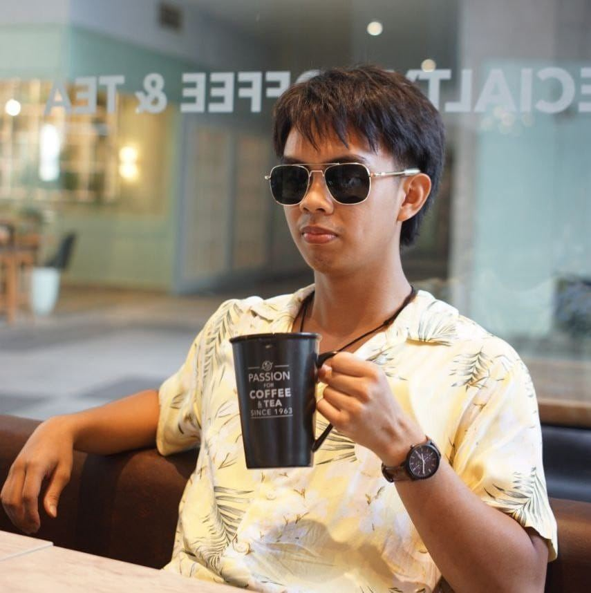
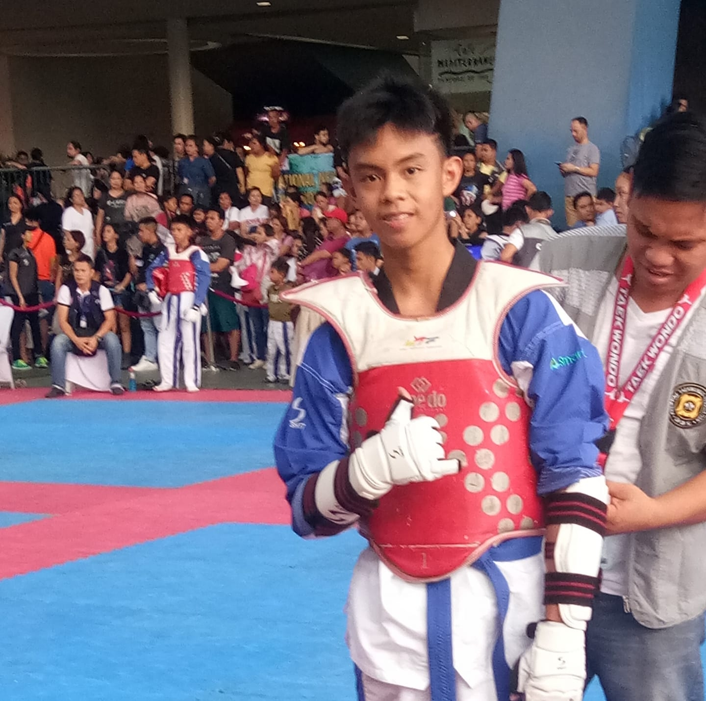

I am a person who enjoys learning new things and exploring different interests.
I like working on creative ideas and improving my skills little by little.
This website serves as a space to share a glimpse of who I am.
|
In my free time, I enjoy activities that help me relax and think creatively.
I appreciate moments that allow me to reflect and grow as a person.
Simple experiences often become meaningful memories for me.
|

I believe that personal growth comes from curiosity and consistency.
Every experience adds something valuable to who I am today.
This profile is a small part of my ongoing journey.
|